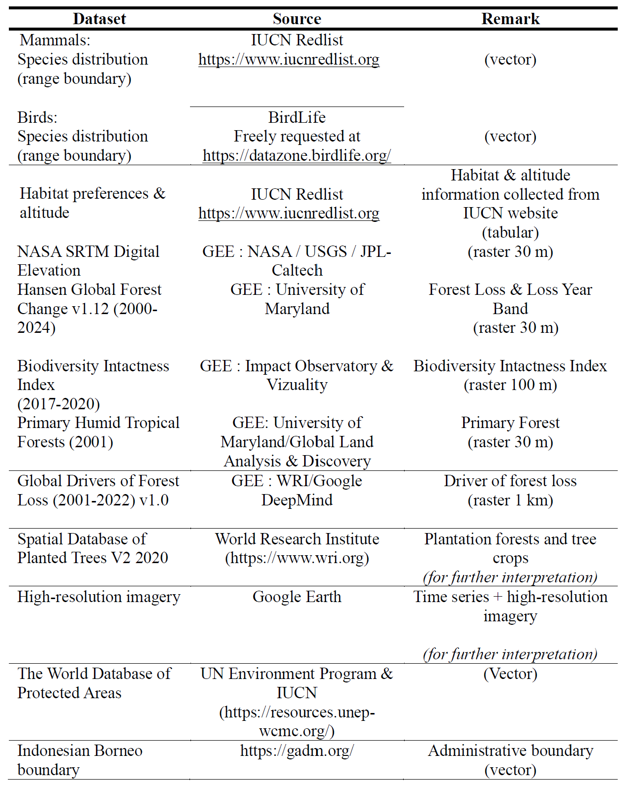
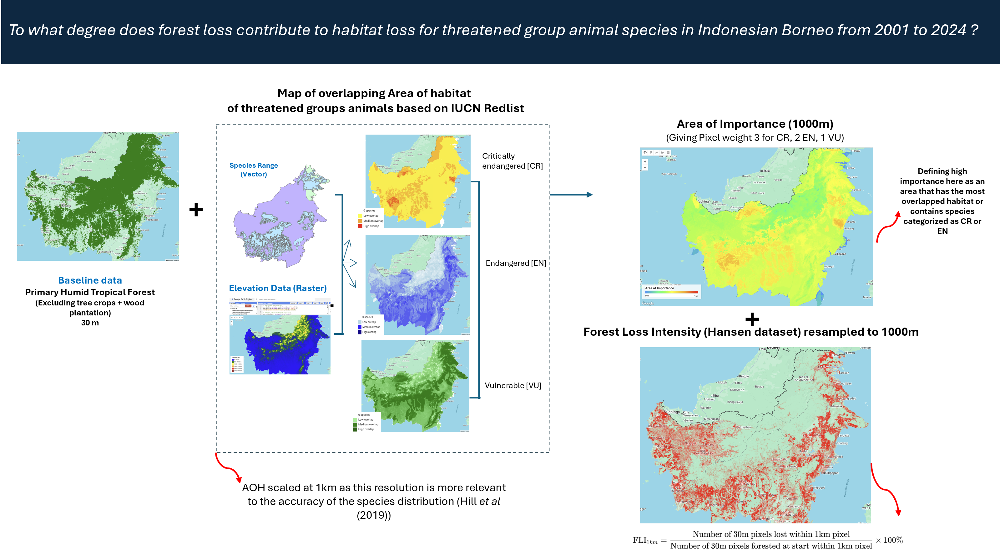
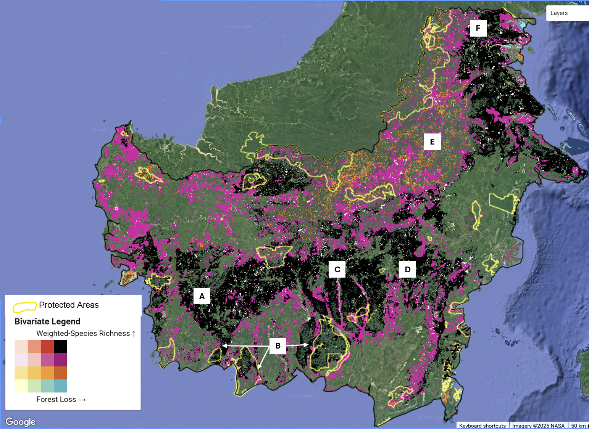
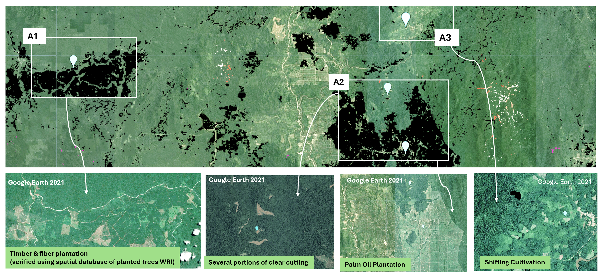
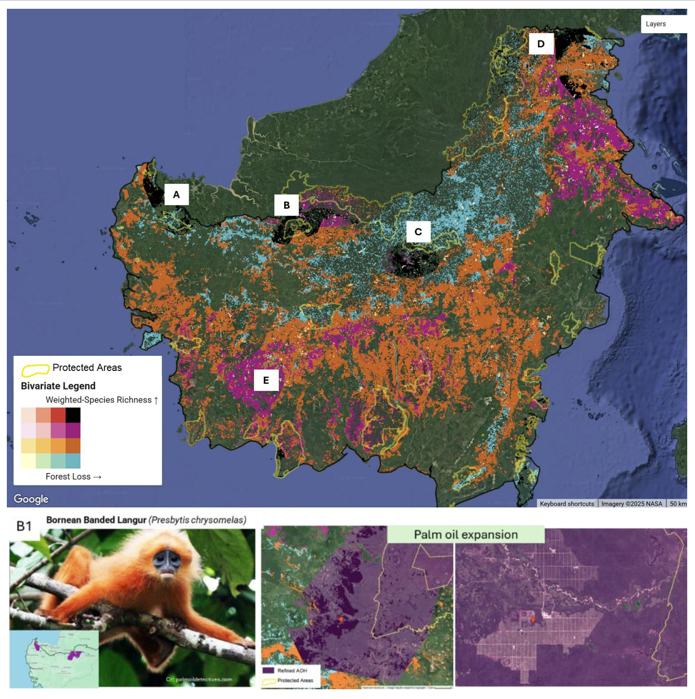

Forest Loss and Biodiversity Mapping
Context
Despite being one of the world’s biodiversity hotspots and facing immense threats, Indonesian Borneo still lacks a comprehensive dataset that identifies where forest loss is occurring and which species’ habitats are being affected. This gap poses a significant challenge to fulfilling the commitments of the Kunming-Montreal Global Biodiversity Framework and advancing broader conservation efforts.
Using Google Earth Engine, this research aims to map and quantify the extent to which forest loss affects habitat loss for threatened animal groups, while also assessing the intactness of biodiversity in the remaining habitat.
All the dataset used are open source, enabling a reproduceability code for conservation practices or other purposes.
Dataset

Method

Fig 6.1 Methodology adopted in the study
Result Sample


Fig 6.2 Bivariate Map of Weighted Species Richness and Forest Loss
The images capture how forest loss overlapped with Species-weighted Richness area. Species-weighted richness reflects the relative importance of habitats—not only in terms of species richness (the presence of various species) but also by giving importance to their extinction risk. Black colour corresponds to the high-high category that dominantly happened in the lowlands. A1, A2, and A3 correspond to a detailed snapshot and their associated driver, checked using historical imagery from Google Earth.
To identify animals of special concern, a second type of bivariate map is produced called Rarity-weighted Richness. For importance based on Rarity-weighted Richness, the results emphasise species with small range distributions.

The images illustrate how forest loss overlaps with areas important for species with small-range distributions. Panels A–D correspond to the high–high category, whereas panel E represents the medium–high category. Panel B1 provides a detailed snapshot showing how the habitat of a small-range species overlaps with palm oil plantations and is located adjacent to Lake-Based National Park. The purple colour represents the refined Area of Habitat (AOH) of the Bornean Langur, adjusted for altitude range and forest cover, while the yellow outlines indicate the boundaries of the protected National Park.
Link to GEE platform: